How far has Squeektoshi run since you showed up?
Every odometer remembers the wheel's settled work at the moment it was minted, then counts every turn after that, live from SqueekCore. It spins at his real pace, sleeps when he sleeps, and earns him gear at 1, 5, 10, 25, 50 and 100 km. Every odometer has its own display, casing and a treat in his paws. Squeek holders get a water bottle.
— / 9,999

The wheel right now
Squeektoshi…
Wheel speed…
Squeek block…
Wheel turns…
From Squeekchain's public API. Odometers count only settled work, so they move a few minutes after the wheel does. Watch the stream.
Latest odometers
Loading…
How it reads the wheel
- Distance: SqueekCore's settled work since your mint × 887 mm, one work unit per wheel turn.
- Status and pace: work in the last three settled rounds (30 min): none is napping, under 1,500 jogging, more is zoomies; the wheel spins at that pace.
- Stage: Newbie, Warm-up at 1 km, Jogger 5, Runner 10, Racer 25, Marathoner 50, Legend 100. One piece of gear each, and the wheel goes steel, bronze, silver, gold.
- Your odometer: display, casing and the treat he holds are rolled at mint.
- Water bottle: the owner holds a Squeek; bronze to diamond by Squeek power in staking.
- Free, one per wallet, 9,999 total. No owner, no admin, no funds. Testnet only.